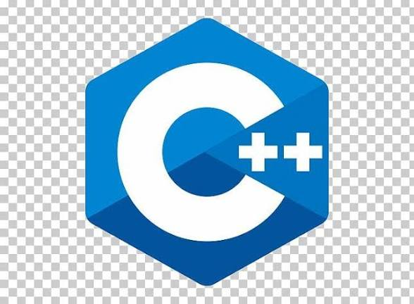
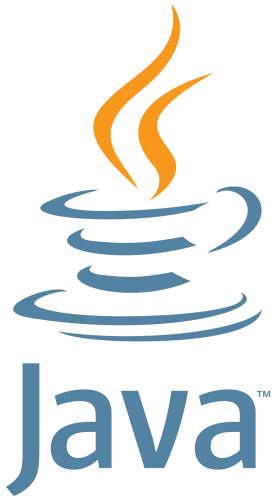
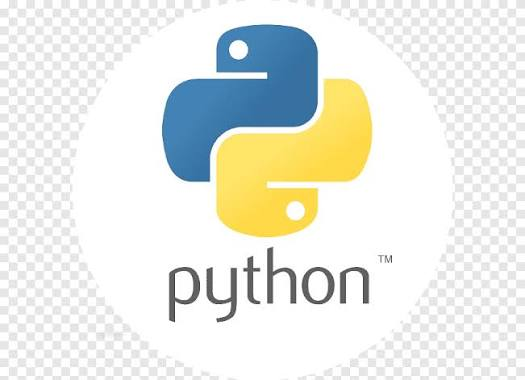

تعتبر البرمجة أساس التكنولوجيا الحديثة، وفي هذه الصفحة سنتعرف على ثلاث لغات قوية، استخداماتها، ومميزاتها.
تعتبر لغة C++ من اللغات القوية جداً والمخضرمة، وهي امتداد للغة C الشهيرة. تتميز بسرعتها العالية وقدرتها على التحكم المباشر بموارد النظام والذاكرة (تطوير منخفض المستوى).

أبرز استخدامات ومجالات C++:
جافا هي لغة برمجة كائنية التوجه (OOP) وتتميز بشعارها الشهير: "اكتب مرة واحدة، واعمل في أي مكان". تعمل هذه اللغة عبر بيئة افتراضية خاصة بها تجعلها مرنة للعمل على مختلف الأنظمة.

المنصات البيئية الشائعة لتشغيل جافا:
بايثون هي لغة برمجة عالية المستوى، تمتاز بسهولة قراءتها وكتابتها، مما يجعلها الخيار الأول للمبتدئين. تُستخدم بايثون بكثافة حالياً في مجالات المستقبل مثل الذكاء الاصطناعي وتحليل البيانات.

أهم مجالات استخدام بايثون الحالية:
لكي تصبح مبرمجاً محترفاً وتبني أكواداً نظيفة، اتبع الخطوات التالية مرتبة حسب الأولوية:
| اسم اللغة | صعوبة التعلم | التركيز الأساسي |
|---|---|---|
| C++ | مرتفعة | الأداء والسرعة |
| Java | متوسطة | الأمان والتوافق |
| Python | سهلة جداً | البساطة والذكاء الاصطناعي |